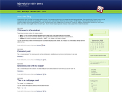

Skin Name: BG b2evlution skin
Description: BG is a simple and stylish, fixed-width b2evolution skin designed by Real Estate Forum. Customize the top part of the skin by editing content to front.php
for b2evo version: 2.x
design by: Real Estate Forum
Tags: blue, green, white, seo-friendly, fixed-width, left sidebar, seo-friendly, 2-columns, widget ready